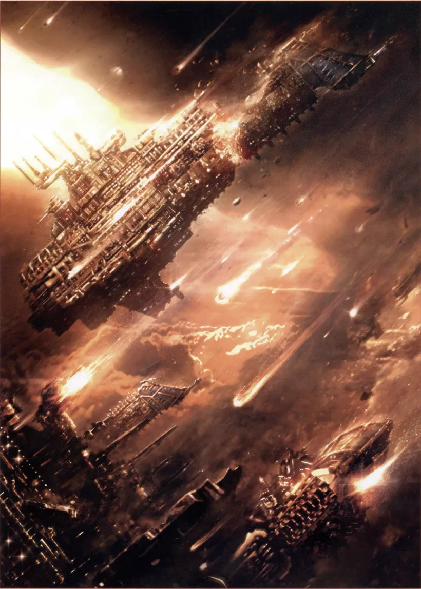
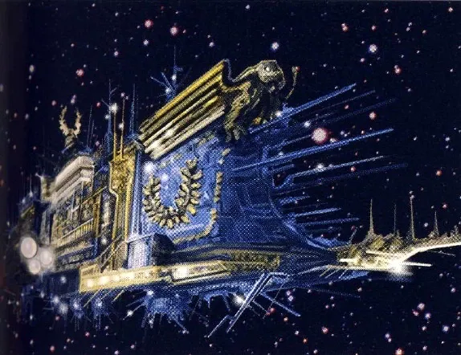
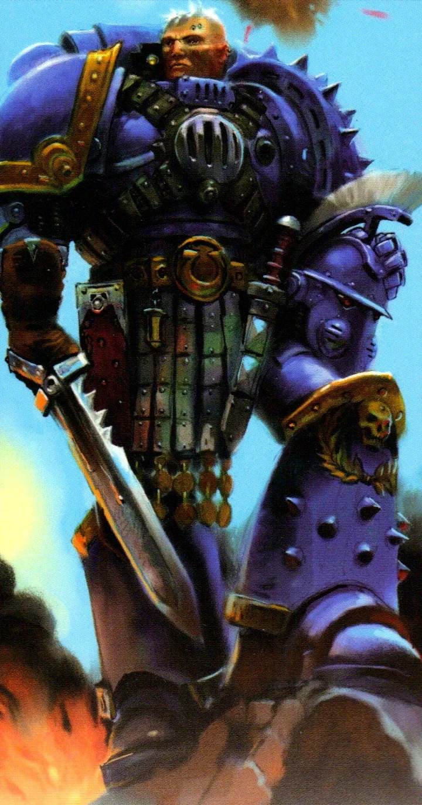
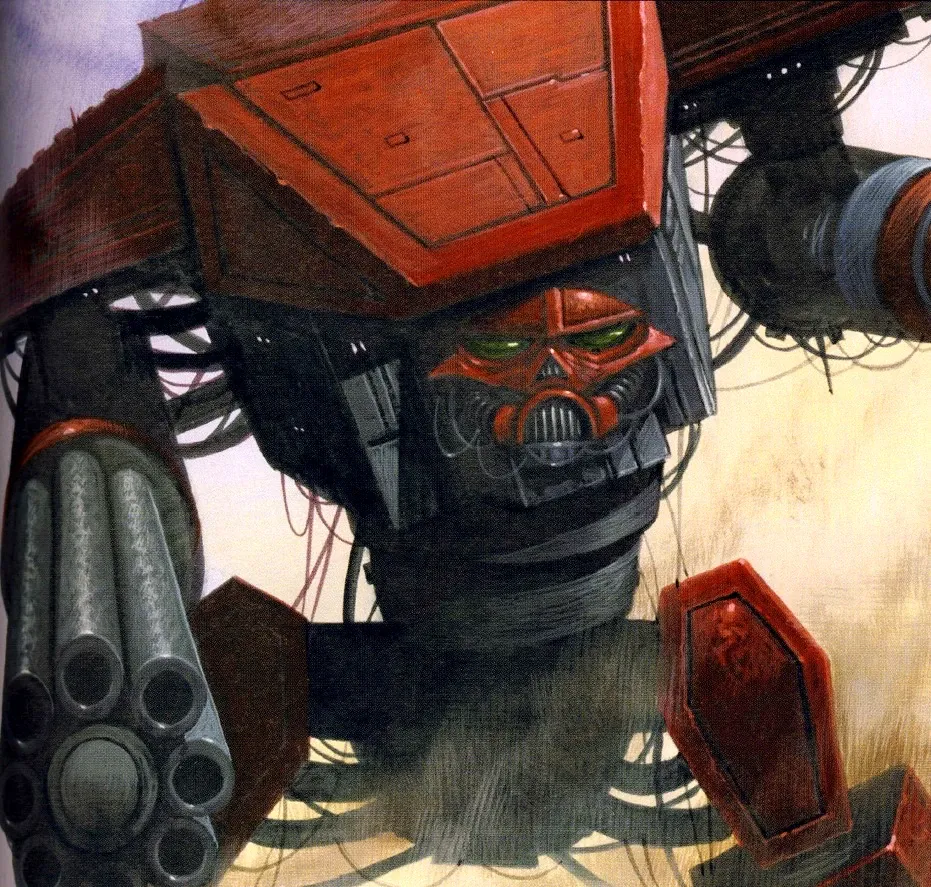
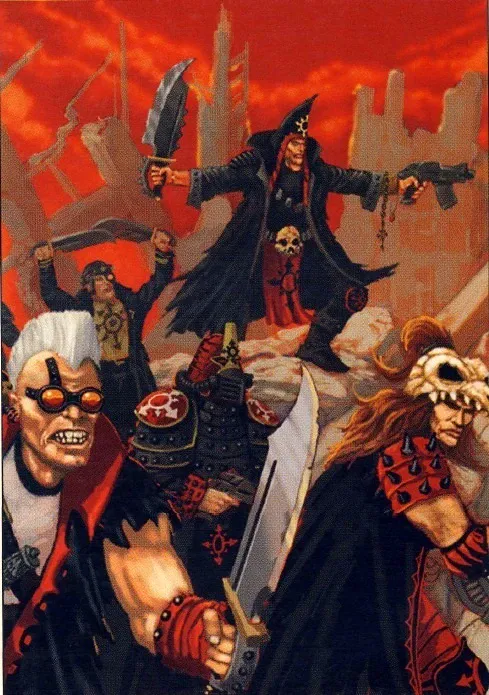
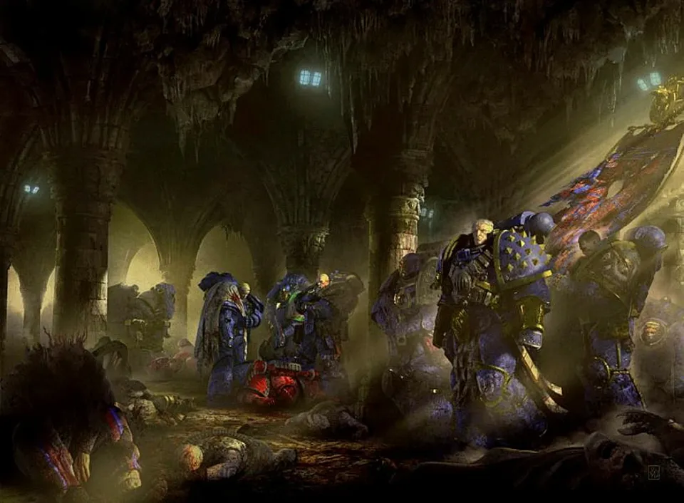
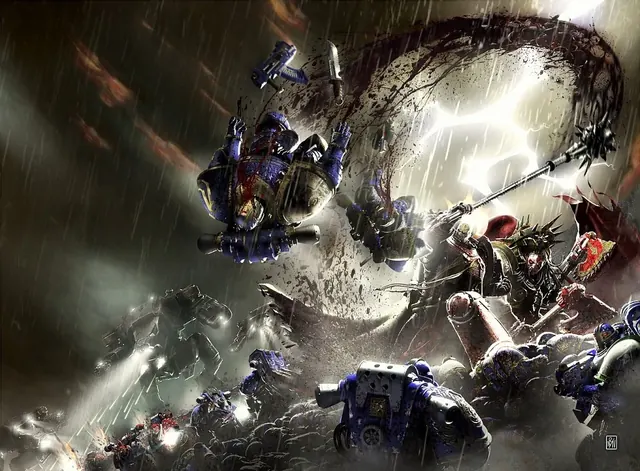
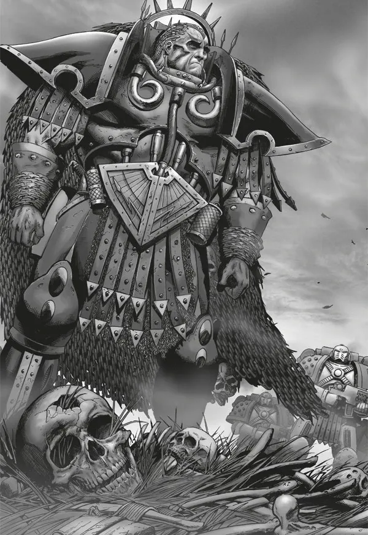
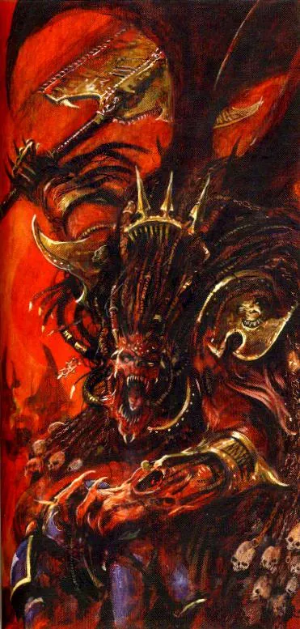

01ภาพรวม
ระหว่างที่ Horus เปิดฉากกบฏที่ Isstvan Ultramarines ซึ่งเป็น Legion ที่ใหญ่ที่สุด (ราว 200,000 นายที่ Calth) ยังไม่รู้อะไรเลย พวกเขาได้รับคำสั่งจาก Warmaster ให้รวมพลที่ดาว Calth (แคลธ) ในอาณาจักร Ultramar เพื่อออกรบร่วมกับ Word Bearers กับ Ork ที่ Ghaslakh
คำสั่งนั้นคือกับดัก Word Bearers ไม่ได้มาเพื่อช่วยรบ แต่มาเพื่อแก้แค้น — 43 ปีก่อนจักรพรรดิสั่ง Ultramarines เผาเมือง Monarchia ที่ Word Bearers สร้างบูชาพระองค์ และบังคับให้ทั้ง Legion คุกเข่าบนเถ้าถ่าน (ดู Great Crusade)
- Calth — กองหลักของ Word Bearers นำโดย Kor Phaeron และ Erebus ลอบโจมตี Ultramarines ที่กำลังรวมพล
- Shadow Crusade — Lorgar กับ Angron นำกองทัพบุกเผาดาวทั่ว Ultramar เพื่อให้ Ultramarines ไม่มีบ้านให้กลับ
02การลอบโจมตีในวงโคจร
ดาว Calth เป็นดาวเกษตรที่กำลังจะกลายเป็นมหาอำนาจทางอุตสาหกรรมรองจาก Macragge เรือรบของทั้งสอง Legion จอดเรียงกันอยู่รอบอู่ต่อเรือในวงโคจร Word Bearers มาถึงช้ากว่าเล็กน้อยและจัดเรือให้อยู่ด้านหลังกองเรือ Ultramarines
ทันทีที่สัญญาณเริ่ม Word Bearers ยิงใส่เรือของ Ultramarines ในระยะประชิดที่ไม่มีทางหลบ พร้อมกันนั้นคนของพวกเขาที่แฝงอยู่บนดาวก็ยึดระบบป้องกันของดาว และหันปืนป้องกันวงโคจรมายิงใส่ Ultramarines เอง เรือรบหลายลำถูกทำลายก่อนจะได้ยกโล่ เรือบางลำถูกบังคับให้ตกลงบนพื้นดาว

พิธีกรรมใต้แสงจันทร์
บนพื้นดาว Erebus นำลัทธิของตนวางหินจาก Isstvan V เป็นวงกลมกว้างหนึ่งกิโลเมตร และใช้ gene-seed ที่เก็บจากศพของ Space Marine ทั้งสองฝ่ายใน Isstvan เป็นเครื่องสังเวย พิธีกรรมนี้ร่วมกับการสังหารหมู่ทั่วดาว กลายเป็นจุดเริ่มต้นของ Ruinstorm
03Guilliman, Kor Phaeron และปาฏิหาริย์ในอวกาศ

เรือธง Macragge's Honour ถูกยิงจนหอบัญชาการพัง ปีศาจและ Word Bearers บุกขึ้นเรือ ไม่มีใครรู้ว่า Primarch ยังมีชีวิตอยู่หรือไม่ First Master Marius Gage รวบรวมผู้รอดชีวิตกู้เรือคืน ขณะที่จ่าสิบเอก Aeonid Thiel ช่วยกัปตันเรือออกมาจากฝูงปีศาจ
ระหว่างการโต้กลับบนเปลือกนอกของเรือ ทีมของ Thiel กำลังจะถูกล้อมสังหาร จู่ ๆ Guilliman ก็พุ่งเข้ามากลางอวกาศและสังหาร Word Bearers จนหมด — เขารบอยู่บนเปลือกเรือมาสิบชั่วโมงเต็ม ทหารเรียกเหตุการณ์นี้ว่า "ปาฏิหาริย์"
ในเวลาต่อมา Guilliman เทเลพอร์ตบุกอู่ต่อเรือ Zetsun Verid และเผชิญหน้ากับ Kor Phaeron First Captain ของ Word Bearers ที่ใช้เวทมนตร์ของ Chaos ทุ่ม Primarch จนชุดเกราะร้าว แล้วจ่อมีดต้องสาปที่คอเพื่อพยายามเปลี่ยนใจ Guilliman ให้เข้ากับ Chaos แทนที่จะฆ่า — ความผิดพลาดนั้นทำให้ Guilliman ฉวยโอกาสทะลวงอกและกระชากหัวใจดวงหนึ่งของ Kor Phaeron ออกมา (Kor Phaeron รอดเพราะ Space Marine มีหัวใจสองดวง)

04การรบบนพื้นดาว: Ventanus และ Lanshear
บนพื้นดาว Word Bearers และลัทธิ Chaos นับไม่ถ้วนบุกเมืองต่าง ๆ พร้อม Titan ที่ถูกปีศาจสิง กัปตัน Remus Ventanus แห่ง 4th Company กลายเป็นผู้นำการตั้งรับ เขาตระหนักว่าตราบใดที่ระบบป้องกันของดาวยังอยู่ในมือศัตรู กองเรือจะไม่มีทางรอด
Ventanus นำการบุกฝ่าแนว Word Bearers ไปยังอาคารสมาคมขนส่งสินค้าในเมือง Lanshear เพื่อให้ Magos Tawren แห่ง Mechanicum อัปโหลด "รหัสหยุดการทำงาน" เข้าไปยึดระบบคืน ระหว่างนั้นพวกเขาถูก Titan ฝ่ายทรยศ, Terminator และ Gal Vorbak (Word Bearers ที่ถูกปีศาจสิง) ล้อมไว้ แต่ในที่สุดการยึดคืนก็สำเร็จ ปืนของดาวหันกลับไปยิงเรือ Word Bearers ทำให้ฝ่ายกบฏต้องล่าถอย



05ดวงอาทิตย์ที่ถูกวางยาพิษ และ Underworld War
ก่อนล่าถอย Word Bearers ทำสิ่งที่โหดร้ายที่สุด — พวกเขาวางยาพิษดวงอาทิตย์ Veridia ด้วยวิธีที่ไม่มีใครเข้าใจ ลมสุริยะกลายเป็นรังสีที่ฆ่าทุกชีวิตบนพื้นผิว ชั้นบรรยากาศที่เสียหายจากการรบอยู่แล้วก็ปกป้องไม่ได้ ประชาชนที่เหลือต้องอพยพลงไปอยู่ในเมืองใต้ดิน
Ultramarines ราว 40,000 นายต้องอยู่บน Calth ขณะที่ Word Bearers ที่เหลือก็หนีลงใต้ดินเช่นกัน สงครามจึงย้ายลงไปในอุโมงค์และเมืองใต้ดินกลายเป็น Underworld War ที่ยืดเยื้อหลายปี ส่วน Guilliman ต้องรีบนำกองเรือที่เหลือออกจากระบบก่อนพายุ Warp จะปิดล้อม พร้อมสาบานว่าจะกลับมาช่วย Calth

ทุกวันนี้ Calth ยังเป็นดาวที่ผู้คนอาศัยอยู่ใต้ดินทั้งหมด และ Ultramarines ยังรำลึกถึงการทรยศครั้งนั้นทุกปี
06Shadow Crusade: เผา Ultramar
ขณะที่ Calth ลุกเป็นไฟ Lorgar และ Angron นำกองทัพหลักบุก "500 ดาว" ของ Ultramar เป้าหมายไม่ใช่การยึดครอง แต่คือการสร้างความทุกข์ทรมานให้มากที่สุด เพื่อป้อนพลังให้ Ruinstorm ดาวกว่าร้อยดวงถูกทำลาย
Macragge
เรือประจัญบาน Abyss-class ชื่อ Furious Abyss ถูกส่งไปยิงระเบิดไวรัสใส่ Macragge ดาวบ้านเกิดของ Ultramarines แต่หน่วยเล็ก ๆ ของ Ultramarines กับ Space Wolves บุกขึ้นเรือและทำลายจากภายในด้วยชีวิตของพวกเขาเอง
Astagar
Ultramarines เพียง 600 นายของ Lucretius Corvo กับทหารท้องถิ่น 70,000 นายต้านกองทัพที่ใหญ่กว่าหลายเท่า โดยล่อ Titan ที่ถูกปีศาจสิงออกมาแล้วยิงทำลาย จนศัตรูแตกพ่าย
Percepton
กองทัพ Ultramarines ถูกทำลายในเวลาไม่กี่นาที แต่สู้ต่ออีก 163 วัน สุดท้าย Chapter Master Decimus สั่งเรือที่เหลือยิงถล่มดาวด้วยอาวุธเพลิง เพื่อพาศัตรูตายไปด้วยกัน
Armatura
Ultramarines ล่อ World Eaters เข้ากับดัก ถล่มอาคารทับ Angron และทหาร Angron ต้องใช้ขวานคู่ขุดตัวเองออกมาจนขวานพัง Khârn เก็บขวาน Gorechild ไปซ่อมและใช้มาจนถึงยุค 40K
07Nuceria: Angron กลายเป็นปีศาจ
ระหว่าง Shadow Crusade ตะปู Butcher's Nails ในสมองของ Angron กำลังฆ่าเขาเร็วกว่าที่ใครคาดไว้ Lorgar จึงพาเขากลับไปยัง Nuceria ดาวบ้านเกิดที่ Angron เคยเป็นทาสนักสู้ อ้างว่าจะหาความรู้เรื่องการผ่าตัดฝังตะปู


World Eaters ฆ่าประชากรทั้งดาวเพื่อแก้แค้น ขณะที่กองเรือของ Guilliman ตามมาทันและบุกลงพื้นดาว ท่ามกลางการรบ Lorgar ทำพิธีกรรมเปลี่ยน Angron เป็น Daemon Prince ของ Khorne — ทั้งช่วยชีวิตเขาจากตะปู และผูกมัดเขากับ Chaos ตลอดกาล ไม่ว่า Angron จะต้องการหรือไม่

08Ruinstorm: กาแล็กซีถูกผ่าเป็นสอง
เลือดและความทุกข์จาก Calth และ Ultramar รวมกับพิธีกรรมของ Word Bearers ปลุกพายุ Warp ขนาดมหึมาที่เรียกว่า Ruinstorm มันแผ่ไปทางตะวันออกของกาแล็กซี ตัดแสง Astronomican และการสื่อสารทั้งหมด ฝ่ายทรยศที่ได้พรจาก Chaos ยังเดินทางได้ แต่ Legion ภักดีสามกอง — Ultramarines, Blood Angels และ Dark Angels — ติดอยู่อีกฝั่งของกาแล็กซี และไม่อาจกลับไปช่วย Terra ได้หลายปี
ผลที่ตามมาคือ Guilliman เชื่อว่า Terra อาจล่มสลายไปแล้ว และตัดสินใจตั้ง Imperium Secundus
09ทำไมสำคัญต่อยุค 40K
- ความเกลียดชังหมื่นปี — Ultramarines กับ Word Bearers เป็นศัตรูคู่แค้นจนถึงปัจจุบัน
- ที่มาของ Codex Astartes — บทเรียนจาก Calth ทำให้ Guilliman เน้นการวางแผนรับมือเหตุไม่คาดฝันอย่างละเอียด ซึ่งกลายเป็นแก่นของ Codex Astartes
- Gorechild — ขวานที่ Khârn เก็บมาจาก Armatura เป็นอาวุธประจำตัวของเขาจนถึงยุค 40K
- Guilliman พลาด Terra — Ultramarines มาถึง Terra หลังการปิดล้อมจบไปแล้ว
10แหล่งข้อมูลและหมายเหตุ
เนื้อหาหน้านี้สรุปและแปลเป็นภาษาไทยจากบทความใน Warhammer 40k Wiki (Fandom) ซึ่งเรียบเรียงจากหนังสือ Codex, หนังสือชุด Horus Heresy ของ Forge World และนิยาย Black Library ด้านล่างนี้ (ตรวจสอบ ต.ค. 2026)
เนื้อเรื่อง Warhammer ถูกเขียนเพิ่มและแก้ไขมาตลอดหลายสิบปี ปี จำนวน และรายละเอียดบางจุดต่างกันไปตามหนังสือแต่ละเล่ม หน้านี้ใช้ฉบับที่แหล่งอ้างอิงส่วนใหญ่ยอมรับ และบอกไว้เมื่อมีหลายฉบับ